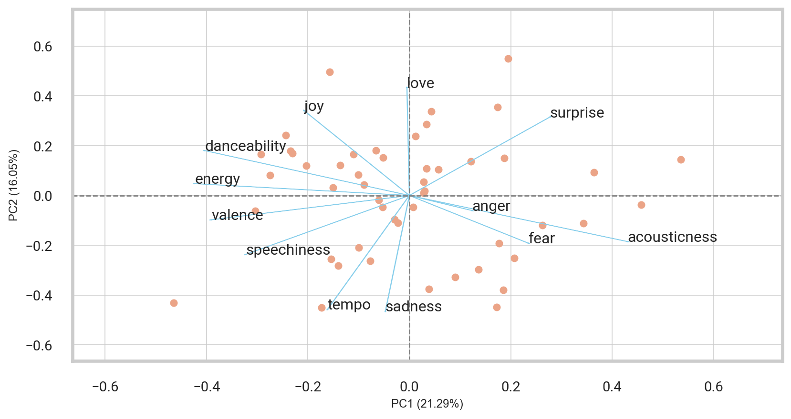
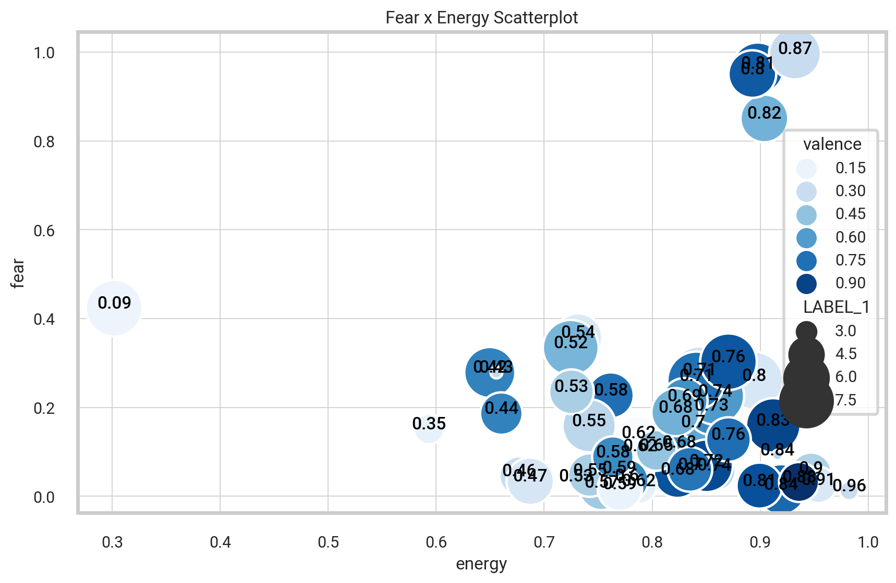
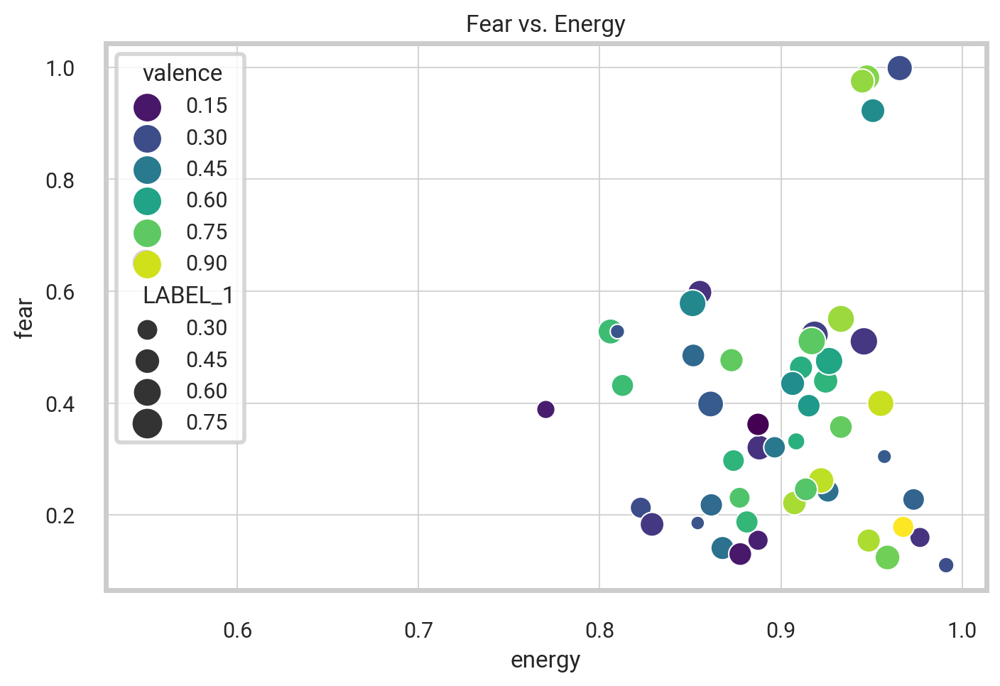
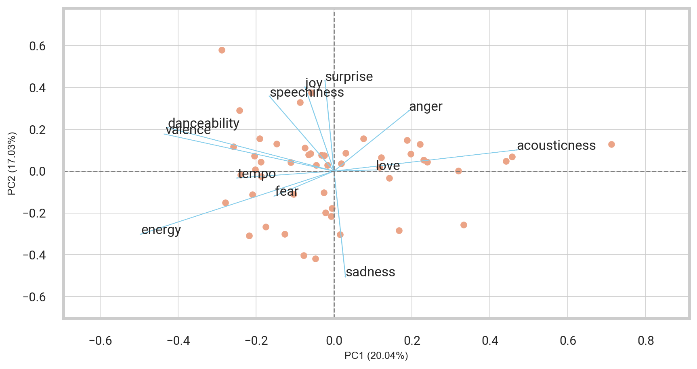
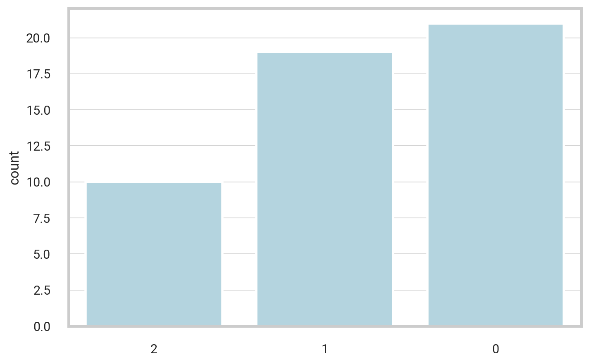
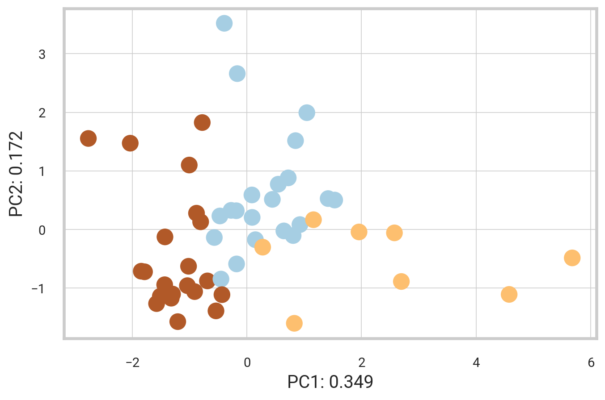
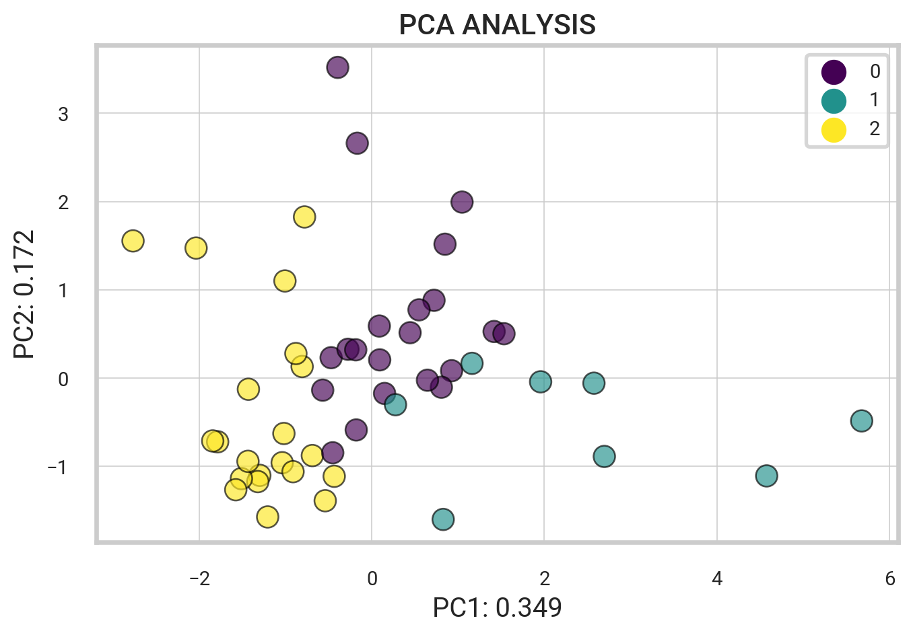

import spotipy
from spotipy.oauth2 import SpotifyClientCredentials
import pandas as pd
from IPython.core.display import HTML
client_id = "xxx"
client_secret = "xxx"NLP Song Lyrics
Spotify API
Goal. Using machine learning to predict the mood of music from song lyrics and audio features.
The following project uses Python implementation that extracts and analyzes information about songs in a Spotify playlist using the Spotify Web API. We then use the lyricsgenius package to search for and save the lyrics of specific songs from the Genius lyrics website. We then implement a Python script that contains several functions for cleaning song lyrics and determining the sentiment of the lyrics.
In summary, the code retrieves and cleans song lyrics, removes stopwords and performs lemmatization, and finally determines the sentiment of the lyrics using pre-trained models for sentiment analysis.
sp = spotipy.Spotify(auth_manager=SpotifyClientCredentials(client_id, client_secret))Display Spotify Playlists
This code retrieves a selection of Spotify playlists for a specified user. It then creates a dataframe that includes various information about each playlist, including the name, ID, description, thumbnail image, and total track count. The resulting dataframe is then displayed as an HTML table, featuring thumbnail images for each playlist.
username = "spotify"
my_playlists = sp.user_playlists(username)| thumbnail | playlist_name | playlist_id | description | total | |
|---|---|---|---|---|---|
| 0 | Today's Top Hits | 37i9dQZF1DXcBWIGoYBM5M | Post Malone is on top of the Hottest 50! | 50 | |
| 1 | RapCaviar | 37i9dQZF1DX0XUsuxWHRQd | New music from Travis Scott, Drake, Central Cee and Offset. | 50 | |
| 2 | Hot Country | 37i9dQZF1DX1lVhptIYRda | Today's top country hits. Cover: Lainey Wilson | 50 | |
| 3 | Viva Latino | 37i9dQZF1DX10zKzsJ2jva | Today's top Latin hits, elevando nuestra música. Cover: Quevedo | 50 | |
| 4 | New Music Friday | 37i9dQZF1DX4JAvHpjipBk | New music from Travis Scott, Post Malone, Offset & Cardi B, Mitski, Calvin Harris & Sam Smith and more! | 100 |
Get Tracks from Playlist
The given code utilizes Spotify’s API to retrieve information about songs in a Spotify playlist. It collects metadata including track name, album, and release date, as well as track features such as danceability and tempo. Additionally, it acquires data on the popularity and genre of the main artist. The extracted information is then organized and displayed in a pandas DataFrame.
# Get playlist song features and artist info
def playlist_features(id, artist_id, playlist_id):
# Create Spotify API client variables
meta = sp.track(id)
audio_features = sp.audio_features(id)
artist_info = sp.artist(artist_id)
playlist_info = sp.playlist(playlist_id)
# Metadata
name = meta['name']
track_id = meta['id']
album = meta['album']['name']
artist = meta['album']['artists'][0]['name']
artist_id = meta['album']['artists'][0]['id']
release_date = meta['album']['release_date']
length = meta['duration_ms']
popularity = meta['popularity']
# Main artist name, popularity, genre
artist_pop = artist_info["popularity"]
artist_genres = artist_info["genres"]
# Track features
acousticness = audio_features[0]['acousticness']
danceability = audio_features[0]['danceability']
energy = audio_features[0]['energy']
instrumentalness = audio_features[0]['instrumentalness']
liveness = audio_features[0]['liveness']
loudness = audio_features[0]['loudness']
speechiness = audio_features[0]['speechiness']
tempo = audio_features[0]['tempo']
valence = audio_features[0]['valence']
key = audio_features[0]['key']
mode = audio_features[0]['mode']
time_signature = audio_features[0]['time_signature']
# Basic playlist info
playlist_name = playlist_info['name']
return [name, track_id, album, artist, artist_id, release_date, length, popularity,
artist_pop, artist_genres, acousticness, danceability,
energy, instrumentalness, liveness, loudness, speechiness,
tempo, valence, key, mode, time_signature, playlist_name]def get_playlist_tracks(playlist_URI):
tracks = []
results = sp.playlist_tracks(playlist_URI)
tracks = results["items"]
while results["next"]:
results = sp.next(results)
tracks.extend(results["items"])
return tracksChoose a specific playlist to analyze by copying the URL from the Spotify Player interface. Using that link, the following code uses the get_playlist_tracks method to retrieve a list of IDs and corresponding artists for each track from the playlist.
# Spotify playlist url
playlist_ids = []
track_ids = []
artist_uris = []
# Extract song ids and artists from playlist
playlist_URI = "37i9dQZF1DXcBWIGoYBM5M"
for i in get_playlist_tracks(playlist_URI):
track_ids.append(i["track"]["id"])
artist_uris.append(i["track"]["artists"][0]["uri"])
playlist_ids.append(playlist_URI)The code above extracts song and artist information from a Spotify playlist identified by its URI. The extracted data includes track IDs, artist URIs, and playlist IDs.
The following code loops through each track ID in the playlist and extracts additional song information by calling the function we created above. From there, we can create a pandas data frame by passing in the extracted information and giving the column header names we want.
# Loop over track ids
all_tracks = [
playlist_features(track_ids[i], artist_uris[i], playlist_ids[i])
for i in range(len(track_ids))
]| name | artist | release_date | popularity | artist_pop | artist_genres | acousticness | danceability | energy | instrumentalness | liveness | loudness | speechiness | tempo | valence | playlist | |
|---|---|---|---|---|---|---|---|---|---|---|---|---|---|---|---|---|
| 0 | What Was I Made For? [From The Motion Picture "Barbie"] | Billie Eilish | 2023-07-13 | 84 | 86 | [art pop, electropop, pop] | 0.9590 | 0.444 | 0.0911 | 0.000001 | 0.098 | -17.665 | 0.0307 | 78.403 | 0.142 | Today's Top Hits |
| 1 | vampire | Olivia Rodrigo | 2023-06-30 | 98 | 84 | [pop] | 0.1690 | 0.511 | 0.5320 | 0.000000 | 0.311 | -5.745 | 0.0560 | 137.827 | 0.322 | Today's Top Hits |
| 2 | Cruel Summer | Taylor Swift | 2019-08-23 | 99 | 100 | [pop] | 0.1170 | 0.552 | 0.7020 | 0.000021 | 0.105 | -5.707 | 0.1570 | 169.994 | 0.564 | Today's Top Hits |
| 3 | Popular (with Playboi Carti & Madonna) - Music from the HBO Original Series | The Weeknd | 2023-06-02 | 91 | 93 | [canadian contemporary r&b, canadian pop, pop] | 0.0569 | 0.855 | 0.6780 | 0.000037 | 0.412 | -6.276 | 0.1890 | 99.029 | 0.852 | Today's Top Hits |
| 4 | Dance The Night (From Barbie The Album) | Dua Lipa | 2023-05-25 | 94 | 85 | [dance pop, pop, uk pop] | 0.0207 | 0.671 | 0.8450 | 0.000000 | 0.329 | -4.930 | 0.0480 | 110.056 | 0.775 | Today's Top Hits |
| 5 | WHERE SHE GOES | Bad Bunny | 2023-05-18 | 100 | 94 | [reggaeton, trap latino, urbano latino] | 0.1430 | 0.652 | 0.8000 | 0.629000 | 0.112 | -4.019 | 0.0614 | 143.978 | 0.234 | Today's Top Hits |
| 6 | Barbie World (with Aqua) [From Barbie The Album] | Nicki Minaj | 2023-06-23 | 91 | 85 | [hip pop, pop, queens hip hop, rap] | 0.5190 | 0.770 | 0.5800 | 0.000127 | 0.233 | -8.393 | 0.2470 | 144.072 | 0.753 | Today's Top Hits |
| 7 | Kill Bill | SZA | 2022-12-08 | 95 | 87 | [pop, r&b, rap] | 0.0521 | 0.644 | 0.7350 | 0.144000 | 0.161 | -5.747 | 0.0391 | 88.980 | 0.418 | Today's Top Hits |
| 8 | As It Was | Harry Styles | 2022-03-31 | 93 | 86 | [pop] | 0.3420 | 0.520 | 0.7310 | 0.001010 | 0.311 | -5.338 | 0.0557 | 173.930 | 0.662 | Today's Top Hits |
| 9 | Super Shy | NewJeans | 2023-07-07 | 91 | 80 | [k-pop, k-pop girl group] | 0.1800 | 0.776 | 0.8170 | 0.000034 | 0.146 | -6.018 | 0.0748 | 149.921 | 0.515 | Today's Top Hits |
Top Artist Genres
The code below creates a dictionary of artist genres and their frequency, and then converts it into a dataframe for sorting by frequency. This code is counting how many times each genre appears in a list called artist_genres. It does this by creating a dictionary called genres_dict. It then puts the results in a DataFrame called df_genres, which shows the genres and how many times they appear.
genres_dict = {}
for x in df.artist_genres:
for ii in x:
if ii in genres_dict:
genres_dict[ii] += 1
else:
genres_dict[ii] = 1
print(genres_dict)
# Convert Dictionary to Dataframe
df_genres = pd.DataFrame(genres_dict.items(), columns=['Genre', 'Freq']).sort_values('Freq', ascending=False)
df_genres = df_genres.reset_index(drop = True){'art pop': 2, 'electropop': 1, 'pop': 24, 'canadian contemporary r&b': 2, 'canadian pop': 2, 'dance pop': 5, 'uk pop': 3, 'reggaeton': 3, 'trap latino': 4, 'urbano latino': 4, 'hip pop': 1, 'queens hip hop': 1, 'rap': 8, 'r&b': 3, 'k-pop': 2, 'k-pop girl group': 2, 'afrobeats': 2, 'nigerian pop': 1, 'hip hop': 3, 'atl hip hop': 1, 'melodic rap': 2, 'trap': 2, 'dfw rap': 1, 'big room': 2, 'edm': 3, 'pop dance': 2, 'bedroom pop': 2, 'rap canario': 1, 'chicago drill': 1, 'chicago rap': 1, 'drill': 1, 'gen z singer-songwriter': 2, 'singer-songwriter pop': 3, 'pop reggaeton': 1, 'colombian pop': 1, 'contemporary country': 2, 'country': 1, 'piano rock': 1, 'australian pop': 1, 'viral pop': 1, 'alternative r&b': 1, 'modern indie pop': 1, 'pov: indie': 2, 'corrido': 1, 'corridos tumbados': 1, 'sad sierreno': 1, 'sierreno': 1, 'bedroom r&b': 1, 'alternative pop rock': 1, 'electro house': 1, 'house': 1, 'progressive house': 1, 'uk dance': 1, 'electra': 1, 'float house': 1, 'uk hip hop': 1}
Genius API
The following is a Python script that contains several functions for cleaning song lyrics and determining the sentiment of the lyrics. First, we import lyricsgenius and BeautifulSoup libraries. The genius variable uses the lyricsgenius API to search for the lyrics of any song, for example “Too Many Nights” by Metro Boomin. The commented code at the end saves the lyrics.
import lyricsgenius
import requests
from bs4 import BeautifulSoup
genius = lyricsgenius.Genius("epFCxujgBe-Y6WrkZedI8kerKxiCpR6Rh0DAHYNlKDf9B4H1nXTdZIkj7krNUHVV")
song = genius.search_song("Too Many Nights", "Metro Boomin")
# song.save_lyrics()Searching for "No Good" by Juice WRLD...Done.1. Regex and Profanity Filter
The following function essentially takes a song name and artist, searches for the lyrics of the song, cleans the lyrics by removing profanity and certain characters/patterns, and returns a list of cleaned lyrics with non-ASCII characters removed.
import re
from profanity import profanity
from better_profanity import profanity as profanity2def clean_song_lyrics(song_name, song_artist):
song_genius = genius.search_song(song_name, song_artist)
clean_lyrics = song_genius.lyrics.partition('Lyrics')[2].lower()
clean_lyrics = profanity.censor(clean_lyrics) # censored_text
clean_lyrics = re.sub(r"[,\(\)\?\!\.\$\#\@\%]", "", clean_lyrics)
clean_lyrics = re.sub(r"[\[].*?[\]]", "", clean_lyrics)
clean_lyrics = re.sub(r"\d+embed", "", clean_lyrics)
clean_lyrics = re.sub(r'\"', '', clean_lyrics)
clean_lyrics = profanity2.censor(clean_lyrics) # censored_text
clean_lyrics = re.sub(r"[\*]", "", clean_lyrics)
clean_lyrics_decode = []
for i in (clean_lyrics.split()):
#encode() method
strencode = i.encode("ascii", "ignore")
#decode() method
strdecode = strencode.decode()
clean_lyrics_decode.append(strdecode)
return clean_lyrics_decode2. Removing Stop Words
#import spacy
#import nltk
#import gensim
from nltk.corpus import stopwords
from nltk.stem import WordNetLemmatizerdef remove_stopwords_lyrics(clean_lyrics_decode):
stopword = stopwords.words('english')
stopword.extend(["i'm", "i'll", "'ll", "i'ma"])
removing_stopwords = [word for word in clean_lyrics_decode if word not in stopword]
wnl = WordNetLemmatizer()
return [wnl.lemmatize(word) for word in removing_stopwords] # lemmatized_word
NLP
Using pipeline class to make predictions from models available in the Hub
import transformers
from transformers import pipeline
#import tensorflow as tf
## python -m pip install "tensorflow<2.11"
# python -m pip install "protobuf<3.2"
classifier = pipeline("text-classification",model='bhadresh-savani/distilbert-base-uncased-emotion', return_all_scores=True)
classifier2 = pipeline("text-classification",model='cardiffnlp/twitter-roberta-base-sentiment', return_all_scores=True)
classifier3 = pipeline("sentiment-analysis", return_all_scores=True)Distilbert-base-uncased-emotion is a model fine-tuned for detecting emotions in texts, including sadness, joy, love, anger, fear and surprise
def get_lyric_sentiment(cleaned_lyrics):
song_score = {}
x = ' '.join(cleaned_lyrics)
# classifier = pipeline("text-classification",model='bhadresh-savani/distilbert-base-uncased-emotion', return_all_scores=True)
prediction = classifier(x, truncation = True)
for j in prediction[0]:
song_score[j['label']] = j['score']
#classifier2 = pipeline("text-classification",model='cardiffnlp/twitter-roberta-base-sentiment', return_all_scores=True)
prediction2 = classifier2(x, truncation=True, max_length=512)
for k in prediction2[0]:
song_score[k['label']] = k['score']
#classifier3 = pipeline("sentiment-analysis", return_all_scores=True)
prediction3 = classifier3(x, truncation=True)
for k3 in prediction3[0]:
song_score[k3['label']] = k3['score']
return song_scoreHow to handle sequences longer than 512 tokens Exception encountered when calling layer ‘embeddings’
Putting it All Together
Overall, this code analyzes song lyrics and collects information about each song. It goes through a list of songs and their artists, cleans the lyrics, and removes unnecessary words. Then, it counts the frequency of each word in the lyrics.
It also calculates a sentiment score for each song based on the lyrics. The sentiment score tells us if the song lyrics are positive, negative, or neutral. It collects information about the song and the artist, like the release date, length, popularity, and genre. Finally, it adds all this information to a list.
lyrics_dict = {}
dict_ls = []
for i in range(len(df)):
song_name = df['name'][i].partition(' (')[0]
artist_name = df['artist'][i]
track_lyrics = clean_song_lyrics(song_name, artist_name)
track_lyrics = remove_stopwords_lyrics(track_lyrics)
for k in (track_lyrics):
if k in lyrics_dict:
lyrics_dict[k] += 1
else:
lyrics_dict[k] = 1
sent_score = get_lyric_sentiment(track_lyrics)
sent_score['track_name'] = song_name
sent_score['artist_name'] = artist_name
sent_score['release_date'] = df['release_date'][i]
sent_score['length'] = df['length'][i]
sent_score['popularity'] = df['popularity'][i]
sent_score['artist_pop'] = df['artist_pop'][i]
sent_score['artist_genres'] = df['artist_genres'][i]
sent_score['acousticness'] = df['acousticness'][i]
sent_score['danceability'] = df['danceability'][i]
sent_score['energy'] = df['energy'][i]
sent_score['instrumentalness'] = df['instrumentalness'][i]
sent_score['liveness'] = df['liveness'][i]
sent_score['loudness'] = df['loudness'][i]
sent_score['speechiness'] = df['speechiness'][i]
sent_score['tempo'] = df['tempo'][i]
sent_score['valence'] = df['valence'][i]
dict_ls.append(sent_score)Searching for "What Was I Made For? [From The Motion Picture "Barbie"]" by Billie Eilish...
Done.
Searching for "vampire" by Olivia Rodrigo...
Done.
Searching for "Cruel Summer" by Taylor Swift...
Done.
Searching for "Popular" by The Weeknd...
Done.
Searching for "Dance The Night" by Dua Lipa...
Done.
Searching for "WHERE SHE GOES" by Bad Bunny...
Done.
Searching for "Barbie World" by Nicki Minaj...
Done.
Searching for "Kill Bill" by SZA...
Done.
Searching for "As It Was" by Harry Styles...
Done.
Searching for "Super Shy" by NewJeans...
Done.
Searching for "Flowers" by Miley Cyrus...
Done.
Searching for "Calm Down" by Rema...
Done.
Searching for "Calling" by Metro Boomin...
Done.
Searching for "fukumean" by Gunna...
Done.
Searching for "Attention" by Doja Cat...
Done.
Searching for "Seven" by Jung Kook...
Done.
Searching for "Cupid - Twin Ver." by FIFTY FIFTY...
Done.
Searching for "Chemical" by Post Malone...
Done.
Searching for "People" by Libianca...
Done.
Searching for "LALA" by Myke Towers...
Done.
Searching for "Die For You - Remix" by The Weeknd...
Done.
Searching for "Baby Don't Hurt Me" by David Guetta...
Done.
Searching for "Boy's a Liar Pt. 2" by PinkPantheress...
Done.
Searching for "Columbia" by Quevedo...
Done.
Searching for "All My Life" by Lil Durk...
Done.
Searching for "Daylight" by David Kushner...
Done.
Searching for "Creepin'" by Metro Boomin...
Done.
Searching for "MOJABI GHOST" by Tainy...
Done.
Searching for "Moonlight" by Kali Uchis...
Done.
Searching for "Snooze" by SZA...
Done.
Searching for "Fast Car" by Luke Combs...
Done.
Searching for "Karma" by Taylor Swift...
Done.
Searching for "I Ain't Worried" by OneRepublic...
Done.
Searching for "Rush" by Troye Sivan...
Done.
Searching for "What It Is" by Doechii...
Done.
Searching for "I'm Good" by David Guetta...
Done.
Searching for "Until I Found You" by Stephen Sanchez...
Done.
Searching for "Eyes Closed" by Ed Sheeran...
Done.
Searching for "golden hour" by JVKE...
Done.
Searching for "Ella Baila Sola" by Eslabon Armado...
Done.
Searching for "Say Yes To Heaven" by Lana Del Rey...
Done.
Searching for "CUFF IT" by Beyoncé...
Done.
Searching for "Here With Me" by d4vd...
Done.
Searching for "Mona Lisa" by Dominic Fike...
Done.
Searching for "Nonsense" by Sabrina Carpenter...
Done.
Searching for "Miracle" by Calvin Harris...
Done.
Searching for "(It Goes Like) Nanana - Edit" by Peggy Gou...
Done.
Searching for "Sprinter" by Dave...
Done.
Searching for "Last Night" by Morgan Wallen...
Done.
Searching for "Unholy" by Sam Smith...
Done.df_final = pd.DataFrame(dict_ls)
df_final = df_final[['track_name', 'artist_name', 'release_date', 'length', 'popularity',
'artist_pop', 'artist_genres', 'acousticness', 'danceability', 'energy',
'instrumentalness', 'liveness', 'loudness', 'speechiness', 'tempo', 'valence',
'sadness', 'joy', 'love', 'anger', 'fear', 'surprise', 'LABEL_0',
'LABEL_1', 'LABEL_2', 'NEGATIVE', 'POSITIVE']]
# df_final.to_csv('top_songs_us.csv', index=False)| track_name | artist_name | release_date | length | popularity | artist_pop | artist_genres | acousticness | danceability | energy | ... | joy | love | anger | fear | surprise | LABEL_0 | LABEL_1 | LABEL_2 | NEGATIVE | POSITIVE | |
|---|---|---|---|---|---|---|---|---|---|---|---|---|---|---|---|---|---|---|---|---|---|
| 0 | What Was I Made For? [From The Motion Picture "Barbie"] | Billie Eilish | 2023-07-13 | 222369 | 84 | 86 | [art pop, electropop, pop] | 0.959 | 0.444 | 0.0911 | ... | 0.197081 | 0.009966 | 0.345436 | 0.179204 | 0.008392 | 0.095024 | 0.854509 | 0.050466 | 0.971982 | 0.028018 |
| 1 | vampire | Olivia Rodrigo | 2023-06-30 | 219724 | 98 | 84 | [pop] | 0.169 | 0.511 | 0.5320 | ... | 0.993057 | 0.000612 | 0.001648 | 0.001187 | 0.000837 | 0.727187 | 0.240037 | 0.032776 | 0.998202 | 0.001798 |
| 2 | Cruel Summer | Taylor Swift | 2019-08-23 | 178426 | 99 | 100 | [pop] | 0.117 | 0.552 | 0.7020 | ... | 0.241193 | 0.017412 | 0.405512 | 0.024407 | 0.003616 | 0.287019 | 0.607944 | 0.105037 | 0.994126 | 0.005874 |
3 rows × 27 columns
In summary, the code retrieves and cleans song lyrics, removes stopwords and performs lemmatization, and finally determines the sentiment of the lyrics using pre-trained models for sentiment analysis.
Visualizing the Data
## Set Default Plot Chart Style Configurations
from IPython.display import set_matplotlib_formats
import seaborn as sns
pd.set_option('display.max_colwidth', None)
sns.set(style="whitegrid")
sns.set_context("poster", font_scale=.5, rc={"grid.linewidth": 0.6})
sns.set_style({'font.family': 'Roboto'})fig_hist = plt.figure(figsize = (10,5), dpi =100)
plt.title("Figure 1. Distribution of Song Popularity", weight='heavy',y =1.1, x=0.2).set_fontsize('16')
z = sns.histplot(data=df_final, x="popularity", color="#F9C762", alpha = 1.0,bins=15)
sns.despine(left=True, bottom=False)
z.spines['bottom'].set_color('#DDDDDD')
z.yaxis.grid(True, color='#EEEEEE')
z.xaxis.grid(False)
plt.xlabel("Popularity", size=17, weight=500)
plt.ylabel("Frequency", size=17, weight=500)
plt.tight_layout()
#plt.savefig("hold_times_dist.png", format="png", dpi=1200)
plt.show()
Unable to display output for mime type(s): application/vnd.plotly.v1+jsonTwitter-roBERTa-base for Sentiment Analysis
This is a roBERTa-base model trained on ~58M tweets and finetuned for sentiment analysis with the TweetEval benchmark. This model is suitable for English (for a similar multilingual model, see XLM-T).
Reference Paper: TweetEval (Findings of EMNLP 2020). Git Repo: Tweeteval official repository. Labels: 0 -> Negative; 1 -> Neutral; 2 -> Positive
fig, axs = plt.subplots(1, 3, figsize=(15, 5))
fig.suptitle("Figure 2. roBERTa-base Model Labels Distribution", weight='heavy',y =0.99, x=0.16).set_fontsize('18')
sns.histplot(data=df_final, x=df_final[df_final['LABEL_0'].notnull()]['LABEL_0'], color="#e794bb", alpha = 1.0, ax=axs[0], bins=20)
axs[0].set_title("Negative")
sns.histplot(data=df_final, x=df_final[df_final['LABEL_1'].notnull()]['LABEL_1'], color="#ba328b", alpha = 1.0, ax=axs[1], bins=20)
axs[1].set_title("Neutral")
sns.histplot(data=df_final, x=df_final[df_final['LABEL_2'].notnull()]['LABEL_2'], color="teal", alpha = 1.0, ax=axs[2], bins=20)
axs[2].set_title("Positive")
sns.despine(left=True, bottom=True)
fig.tight_layout()
# plt.savefig("_static/images/brand_dist.png", format="png", dpi=1200)
plt.show()
Correlations Matrix
Next, we find the Pearson correlations matrix by using the pandas command df.corr(). We then plot the correlation matrix with the seaborn heatmap.
track_sentiment_df = df_final[['track_name', 'artist_name',
'acousticness', 'danceability', 'energy',
'instrumentalness', 'loudness',
'speechiness', 'tempo', 'valence',
'sadness', 'joy', 'love', 'anger', 'fear', 'surprise',
'LABEL_0', 'LABEL_1', 'LABEL_2', 'NEGATIVE', 'POSITIVE']]
# Find the pearson correlations matrix
corr = track_sentiment_df.corr(method = 'pearson')
plt.figure(figsize=(10,8), dpi =500)
g = sns.heatmap(corr,annot=True,fmt=".2f", linewidth=.5, annot_kws={"size": 8}, cbar_kws={"shrink": .52})
g.set_xticklabels(g.get_xmajorticklabels(), fontsize = 9,family='Roboto')
g.set_yticklabels(g.get_ymajorticklabels(), fontsize = 9,family='Roboto')
plt.title('Sentiment Analysis Model Labels Correlation Matrix')
#plt.savefig('heatmap.png')
plt.show()
fig = plt.figure(figsize = (10,6), dpi=100)
# Create scatterplot. alpha controls the opacity and s controls the size.
ax = sns.scatterplot(x=track_sentiment_df['energy']**0.5, y=track_sentiment_df['fear']**0.5,
size=track_sentiment_df['LABEL_1']*10, hue=track_sentiment_df['valence'],
sizes=(20,1600),
palette='Blues')
#For each point, we add a text inside the bubble
for line in range(0,track_sentiment_df.shape[0]):
ax.text(track_sentiment_df.energy[line]**0.5, track_sentiment_df.fear[line]**0.5,
round(track_sentiment_df.energy[line], 2),
horizontalalignment='center', size='medium', color='black', weight='semibold')
title = 'Fear x Energy Scatterplot'
plt.title(title)
#plt.savefig(title, dpi=400)
plt.show()
plot = sns.scatterplot(x = track_sentiment_df['energy']**0.25,
y = track_sentiment_df['fear']**0.25,
hue = track_sentiment_df['valence'],
size = track_sentiment_df['LABEL_1'],
sizes = (50, 200),
size_order = track_sentiment_df['LABEL_1'],
palette = 'viridis')
plot.set_title('Fear vs. Energy')Text(0.5, 1.0, 'Fear vs. Energy')
X_SMALL = df_final[['acousticness', 'danceability', 'energy', 'speechiness', 'tempo', 'valence',
'sadness', 'joy', 'love', 'anger', 'fear', 'surprise', 'track_name', 'NEGATIVE', 'POSITIVE']]from sklearn.decomposition import PCA
from sklearn.preprocessing import StandardScaler
from bioinfokit.visuz import cluster
X_i = X_SMALL.iloc[:,0:12]
target = X_SMALL['track_name'].to_numpy()
X_st = StandardScaler().fit_transform(X_i)
pca_out = PCA().fit(X_st)
# component loadings
loadings = pca_out.components_
#loadings
# get eigenvalues (variance explained by each PC)
pca_out.explained_variance_
# get biplot
pca_scores = PCA().fit_transform(X_st)
cluster.biplot(cscore=pca_scores, loadings=loadings, labels=X_i.columns.values,
var1=round(pca_out.explained_variance_ratio_[0]*100, 2),
var2=round(pca_out.explained_variance_ratio_[1]*100, 2), #colorlist=target,
show=True,dim=(10,5),dotsize=16)

#pca = PCA()
#X_i = X_SMALL.iloc[:,0:12]
#X_st = StandardScaler().fit_transform(X_i)
#pca_out = PCA().fit(X_st)
#data_pca = pca.fit_transform(X_SMALL)
# data_pca[:12]
pca_scores = PCA().fit_transform(X_st)
# pca_scores
df_pca = pd.DataFrame(pca_scores)
df_pca.head()
cols_pca = [f'PC{i}' for i in range(1, pca_out.n_components_+1)]
cols_pca
df_pca = pd.DataFrame(pca_scores, columns=cols_pca, index=X_i.index)
df_pca.head(3)| PC1 | PC2 | PC3 | PC4 | PC5 | PC6 | PC7 | PC8 | PC9 | PC10 | PC11 | PC12 | |
|---|---|---|---|---|---|---|---|---|---|---|---|---|
| 0 | 5.270466 | 0.948505 | 0.355184 | 0.899354 | -1.575176 | 0.187153 | -0.694101 | 0.246583 | -0.259509 | 0.387764 | -0.552148 | -2.119118e-08 |
| 1 | 0.868476 | 0.136365 | -1.759115 | -0.582333 | 0.832087 | -0.285042 | 0.571442 | -0.345819 | -0.837761 | 0.658721 | -0.620495 | 1.514414e-07 |
| 2 | -0.340464 | 0.211398 | 0.746624 | 0.272780 | 1.084102 | -2.222116 | 0.174974 | 0.812164 | -0.097380 | 0.662247 | 0.090877 | -1.242305e-07 |
You can see the following array, where every element represents the amount of variability explained by every component.
print(pca_out.explained_variance_ratio_)
print('----')
print(pca_out.explained_variance_ratio_.cumsum())[2.00390189e-01 1.70288991e-01 1.34383910e-01 1.02941653e-01
9.50028960e-02 8.51572329e-02 6.81063737e-02 5.82327024e-02
4.89924478e-02 2.36001092e-02 1.29034951e-02 5.87961257e-16]
----
[0.20039019 0.37067918 0.50506309 0.60800474 0.70300764 0.78816487
0.85627125 0.91450395 0.9634964 0.9870965 1. 1. ]Relationship between Original Variables & Components Loading Vectors The Principal Components are produced by a mathematical equation, which is composed of the following weights:
df_weights = pd.DataFrame(pca_out.components_.T, columns=df_pca.columns, index=X_i.columns)
df_weights| PC1 | PC2 | PC3 | PC4 | PC5 | PC6 | PC7 | PC8 | PC9 | PC10 | PC11 | PC12 | |
|---|---|---|---|---|---|---|---|---|---|---|---|---|
| acousticness | 0.468724 | 0.101178 | -0.154943 | 0.095117 | -0.245359 | -0.120015 | -0.536767 | -0.115434 | 0.070889 | -0.338117 | 0.491538 | -1.295545e-09 |
| danceability | -0.426649 | 0.208069 | 0.332417 | -0.063468 | -0.091243 | 0.299193 | -0.089844 | -0.259745 | 0.015869 | -0.686241 | -0.124855 | 9.798790e-09 |
| energy | -0.494327 | -0.300872 | -0.156752 | 0.035209 | -0.027445 | -0.041468 | 0.264895 | 0.231243 | 0.131833 | -0.122816 | 0.693345 | 2.512555e-08 |
| speechiness | -0.164882 | 0.356519 | 0.470527 | -0.159030 | 0.122572 | -0.231263 | -0.113832 | -0.195934 | -0.451256 | 0.342349 | 0.397910 | 1.174216e-08 |
| tempo | -0.247246 | -0.032713 | -0.205444 | 0.158888 | 0.459133 | -0.571742 | -0.317057 | 0.223821 | -0.221113 | -0.288377 | -0.223564 | -8.562726e-09 |
| valence | -0.432923 | 0.176206 | -0.064601 | -0.004597 | -0.181024 | -0.099021 | -0.468560 | -0.067845 | 0.589186 | 0.391578 | -0.100676 | -2.421501e-08 |
| sadness | 0.029325 | -0.503645 | 0.338576 | -0.371437 | -0.180604 | -0.083098 | -0.246487 | 0.201408 | -0.040182 | -0.014708 | -0.082324 | -5.860299e-01 |
| joy | -0.074055 | 0.400435 | -0.554874 | -0.306828 | 0.056751 | 0.068051 | 0.136655 | -0.154038 | -0.099726 | -0.018589 | 0.032253 | -6.087316e-01 |
| love | 0.107100 | 0.005575 | 0.147944 | 0.178263 | 0.702311 | 0.496282 | -0.225293 | 0.116611 | 0.211828 | 0.070765 | 0.180095 | -2.205194e-01 |
| anger | 0.192255 | 0.288664 | 0.354063 | 0.237633 | 0.039010 | -0.443503 | 0.403239 | 0.054367 | 0.461177 | -0.147253 | 0.019369 | -3.152212e-01 |
| fear | -0.151217 | -0.117818 | -0.014168 | 0.779859 | -0.253008 | 0.097645 | -0.042092 | -0.195516 | -0.287340 | 0.136712 | -0.045777 | -3.714501e-01 |
| surprise | -0.022961 | 0.430670 | 0.056360 | 0.081186 | -0.278405 | 0.200308 | -0.077765 | 0.808438 | -0.161244 | -0.005079 | -0.030064 | -6.814124e-03 |
Spotify Songs - Similarity Search
Below, we create a query to retrieve similar elements based on Euclidean distance. In mathematics, the Euclidean distance between two points is the length of the line segment between the two points. In this sense, the closer the distance is to 0, the more similar the songs are.
KNN Algorithm
The k-Nearest Neighbors (KNN) algorithm searches for k similar elements based on a query point at the center within a predefined radius.
# Get a song string search
def getMusicName(elem):
return f"{elem['artist']} - {elem['name']}"
def knnQuery(queryPoint, arrCharactPoints, k):
queryVals = queryPoint.tolist()
distVals = []
# Copy of dataframe indices and data
tmp = arrCharactPoints.copy(deep = True)
for index, row in tmp.iterrows():
feat = row.values.tolist()
# Calculate sum of squared differences
ssd = sum(abs(feat[i] - queryVals[i]) ** 2 for i in range(len(queryVals)))
# Get euclidean distance
distVals.append(ssd ** 0.5)
tmp['distance'] = distVals
tmp = tmp.sort_values('distance')
# K closest and furthest points
return tmp.head(k).index, tmp.tail(k).index
# Execute KNN removing the query point
def querySimilars(df, columns, idx, func, param):
arr = df[columns].copy(deep = True)
queryPoint = arr.loc[idx]
arr = arr.drop([idx])
return func(queryPoint, arr, param)KNN Query Example.
Our function allows us to create personalized query points and modify the columns to explore other options. For example, the following code selects a specific set of song attributes and then searches for the \(k\) highest values of these attributes set equal to one.
Let’s search for \(k=3\) similar songs to a query point \(\textrm{songIndex} = 6\).
from sklearn import preprocessing
scaler=preprocessing.MinMaxScaler() #instantiate a scaler
# all the feature values are in the range [0,1] ,except of loudnes
# so let's scale it to fit the exact same range
loudness2 = df["loudness"].values
loudness_scaled=scaler.fit_transform(loudness2.reshape(-1, 1))
df['loudness_scaled'] = loudness_scaled# Select song and column attributes
songIndex = 4 # query point
columns = ['acousticness', 'danceability', 'energy', 'instrumentalness', 'liveness',
'loudness_scaled', 'tempo',
'speechiness', 'valence']
# Set query parameters
func, param = knnQuery,3
# Implement query
response = querySimilars(df, columns, songIndex, func, param)
print("---- Query Point ----")
print(getMusicName(df.loc[songIndex]))
print('---- k = 3 similar songs ----')
for track_id in response[0]:
track_name = getMusicName(df.loc[track_id])
print(track_name)
print('---- k = 3 nonsimilar songs ----')
for track_id in response[1]:
track_name = getMusicName(df.loc[track_id])
print(track_name)---- Query Point ----
Dua Lipa - Dance The Night (From Barbie The Album)
---- k = 3 similar songs ----
Dominic Fike - Mona Lisa (Spider-Man: Across the Spider-Verse)
Ed Sheeran - Eyes Closed
Rema - Calm Down (with Selena Gomez)
---- k = 3 nonsimilar songs ----
Doechii - What It Is (Solo Version)
Harry Styles - As It Was
Morgan Wallen - Last NightThe code below implements the same idea as above, but queries each track in a given playlist instead of a single defined query point.
similar_count = {} # Similar songs count
nonsimilar_count = {} # Non-similar songs count
for track_index in df.index:
# Implement query
response = querySimilars(df, columns, track_index, func, param)
# Get similar songs
for similar_index in response[0]:
track = getMusicName(df.loc[similar_index])
if track in similar_count:
similar_count[track] += 1
else:
similar_count[track] = 1
# Get non-similar songs
for nonsimilar_index in response[1]:
track = getMusicName(df.loc[nonsimilar_index])
if track in nonsimilar_count:
nonsimilar_count[track] += 1
else:
nonsimilar_count[track] = 1nonsimilar = dict(sorted(nonsimilar_count.items(), key=lambda item: item[1], reverse=True))
print('---- NON SIMILAR SONG COUNTS ----')
for track_name, track_count in nonsimilar.items():
if track_count >= 8:
print(track_name, ':', track_count)
similar = dict(sorted(similar_count.items(), key=lambda item: item[1], reverse=True))
print('\n---- SIMILAR SONG COUNTS ----')
for track_name, track_count in similar.items():
if track_count >= 5:
print(track_name, ':', track_count)---- NON SIMILAR SONG COUNTS ----
Morgan Wallen - Last Night : 43
The Weeknd - Die For You - Remix : 31
Billie Eilish - What Was I Made For? [From The Motion Picture "Barbie"] : 26
Harry Styles - As It Was : 24
Doechii - What It Is (Solo Version) : 19
---- SIMILAR SONG COUNTS ----
SZA - Kill Bill : 5
OneRepublic - I Ain't Worried : 5
Quevedo - Columbia : 5
Nicki Minaj - Barbie World (with Aqua) [From Barbie The Album] : 5
Sam Smith - Unholy (feat. Kim Petras) : 5
Gunna - fukumean : 5
The Weeknd - Popular (with Playboi Carti & Madonna) - Music from the HBO Original Series : 5Organized Songs in a Playlist
import datetime
import numpy as np
import pandas as pd
import matplotlib.pyplot as plt
from sklearn import cluster, decompositionsongs = df[['name','acousticness', 'danceability', 'energy', 'instrumentalness',
'liveness', 'speechiness', 'tempo', 'valence', 'loudness_scaled']]
songs.describe()
| acousticness | danceability | energy | instrumentalness | liveness | speechiness | tempo | valence | loudness_scaled | |
|---|---|---|---|---|---|---|---|---|---|
| count | 50.000000 | 50.000000 | 50.000000 | 50.000000 | 50.000000 | 50.000000 | 50.000000 | 50.000000 | 50.000000 |
| mean | 0.262214 | 0.669240 | 0.659022 | 0.025725 | 0.177190 | 0.076142 | 125.244800 | 0.511538 | 0.784102 |
| std | 0.244049 | 0.114132 | 0.165292 | 0.096359 | 0.122158 | 0.067282 | 27.035927 | 0.246883 | 0.162872 |
| min | 0.001260 | 0.444000 | 0.091100 | 0.000000 | 0.032200 | 0.025400 | 66.900000 | 0.096900 | 0.000000 |
| 25% | 0.065750 | 0.563500 | 0.555000 | 0.000000 | 0.097025 | 0.035225 | 102.642250 | 0.304500 | 0.704982 |
| 50% | 0.174500 | 0.671000 | 0.679500 | 0.000008 | 0.115000 | 0.049200 | 127.992000 | 0.508500 | 0.823084 |
| 75% | 0.430500 | 0.759000 | 0.787250 | 0.000162 | 0.244250 | 0.081850 | 140.853000 | 0.730500 | 0.872186 |
| max | 0.959000 | 0.916000 | 0.965000 | 0.629000 | 0.563000 | 0.327000 | 203.853000 | 0.964000 | 1.000000 |
labels = songs.values[:,0]
X = songs.values[:,1:10]
kmeans = cluster.AffinityPropagation(preference=-200)
kmeans.fit(X)AffinityPropagation(preference=-200)predictions = {}
for p,n in zip(kmeans.predict(X),labels):
if not predictions.get(p):
predictions[p] = []
predictions[p] += [n]
for p in predictions:
print("Category",p)
print("-----")
for n in predictions[p]:
print(n)
print("")Category 0
-----
What Was I Made For? [From The Motion Picture "Barbie"]
Kill Bill
Attention
LALA
Karma
Category 4
-----
vampire
WHERE SHE GOES
Barbie World (with Aqua) [From Barbie The Album]
Super Shy
Calling (Spider-Man: Across the Spider-Verse) (Metro Boomin & Swae Lee, NAV, feat. A Boogie Wit da Hoodie)
All My Life (feat. J. Cole)
Moonlight
Snooze
I Ain't Worried
Ella Baila Sola
Nonsense
Miracle (with Ellie Goulding)
Sprinter
Category 5
-----
Cruel Summer
As It Was
Chemical
What It Is (Solo Version)
Category 3
-----
Popular (with Playboi Carti & Madonna) - Music from the HBO Original Series
Columbia
Creepin' (with The Weeknd & 21 Savage)
Fast Car
Until I Found You (with Em Beihold) - Em Beihold Version
golden hour
Say Yes To Heaven
Category 6
-----
Dance The Night (From Barbie The Album)
Flowers
Calm Down (with Selena Gomez)
Eyes Closed
CUFF IT
Mona Lisa (Spider-Man: Across the Spider-Verse)
Category 2
-----
fukumean
Seven (feat. Latto) (Explicit Ver.)
Cupid - Twin Ver.
People
Baby Don't Hurt Me
Boy's a Liar Pt. 2
Daylight
MOJABI GHOST
Rush
I'm Good (Blue)
Here With Me
(It Goes Like) Nanana - Edit
Unholy (feat. Kim Petras)
Category 1
-----
Die For You - Remix
Category 7
-----
Last Night
K Means Clustering
Using K Means clustering, I will be choosing to break my playlist into 3 smaller playlists.
from sklearn.cluster import KMeans
import seaborn as sns
%matplotlib inline
playlist_tracks = df[['artist','name','acousticness','danceability','energy',
'liveness', 'instrumentalness','speechiness','valence']]
kmeans = KMeans(n_clusters = 3)
kmeans.fit(playlist_tracks.drop(['artist', 'name'], axis = 1))KMeans(n_clusters=3)sns.countplot(x=[str(group) for group in kmeans.labels_], color = 'lightblue')<AxesSubplot:ylabel='count'>
Visualizing the Clusters
Moving forward, let’s look at differences in the audio features of each group.
from sklearn.preprocessing import StandardScaler
scaler = StandardScaler()
scaler.fit(playlist_tracks.drop(['artist', 'name'], axis = 1))
scaled_data = scaler.transform(playlist_tracks.drop(['artist', 'name'], axis = 1))from sklearn.decomposition import PCA
pca = PCA(n_components =2)
pca.fit(scaled_data)
data_pca = pca.transform(scaled_data)
plt.scatter(data_pca[:,0], data_pca[:,1], c = list(kmeans.labels_), cmap = 'Paired')
plt.xlabel('PC1: {:.3f}'.format(pca.explained_variance_ratio_[0]), size = 15)
plt.ylabel('PC2: {:.3f}'.format(pca.explained_variance_ratio_[1]), size = 15)Text(0, 0.5, 'PC2: 0.206')
plot = sns.scatterplot(x=data_pca[:,0], y=data_pca[:,1], hue = list(kmeans.labels_),
alpha = 0.66,
#size = data_pca[:,1], sizes = (50,200),
palette = 'viridis', edgecolor = 'black', cmap='Paired')
plot.set_title('PCA ANALYSIS', size = 16, weight='bold')
plt.xlabel('PC1: {:.3f}'.format(pca.explained_variance_ratio_[0]), size = 15)
plt.ylabel('PC2: {:.3f}'.format(pca.explained_variance_ratio_[1]), size = 15)Text(0, 0.5, 'PC2: 0.206')
playlist_tracks['group'] = list(kmeans.labels_)
playlist_tracks = playlist_tracks.astype({'group': str})
means = pd.DataFrame(index = range(0,3),
columns = list(playlist_tracks[playlist_tracks['group'] == '0'].describe().loc['mean'].index))
means.iloc[0] = playlist_tracks[playlist_tracks['group'] == '0'].describe().loc['mean']
means.iloc[1] = playlist_tracks[playlist_tracks['group'] == '1'].describe().loc['mean']
means.iloc[2] = playlist_tracks[playlist_tracks['group'] == '2'].describe().loc['mean']
meansc:\Users\Hannah Luebbering\.conda\envs\cse160\lib\site-packages\ipykernel_launcher.py:1: SettingWithCopyWarning:
A value is trying to be set on a copy of a slice from a DataFrame.
Try using .loc[row_indexer,col_indexer] = value instead
See the caveats in the documentation: https://pandas.pydata.org/pandas-docs/stable/user_guide/indexing.html#returning-a-view-versus-a-copy
| acousticness | danceability | energy | liveness | instrumentalness | speechiness | valence | |
|---|---|---|---|---|---|---|---|
| 0 | 0.211471 | 0.738905 | 0.710381 | 0.182595 | 0.009162 | 0.089543 | 0.760476 |
| 1 | 0.121411 | 0.654211 | 0.700368 | 0.194463 | 0.044511 | 0.079705 | 0.346205 |
| 2 | 0.6363 | 0.5515 | 0.47261 | 0.13302 | 0.024815 | 0.04123 | 0.3029 |